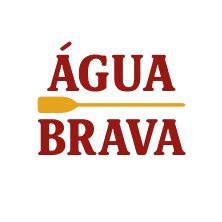

Corredeiras Selvagens
Uma experiência intensa para aventureiros que procuram muita adrenalina. Este passeio inclui corredeiras de nível avançado, paisagens incríveis e acompanhamento de guias especializados.

Pronto para enfrentar corredeiras emocionantes e criar memórias inesquecíveis? Entre em contato conosco para reservar sua aventura hoje mesmo!
Reservar Agora
Uma experiência intensa para aventureiros que procuram muita adrenalina. Este passeio inclui corredeiras de nível avançado, paisagens incríveis e acompanhamento de guias especializados.

Ideal para famílias e iniciantes. O percurso oferece emoção moderada, águas mais tranquilas e diversas oportunidades para apreciar a natureza.

Explore desfiladeiros espetaculares em um passeio de dia inteiro. Inclui almoço, paradas para fotos e algumas das vistas mais bonitas da região.
| Passeio | Duração | Dificuldade | Idade Mínima | Preço |
|---|---|---|---|---|
| Corredeiras Selvagens | 4 horas | Avançado | 16 anos | R$ 250 |
| Aventura em Família | 2 horas | Iniciante | 8 anos | R$ 150 |
| Expedição do Canyon | 8 horas | Intermediário | 12 anos | R$ 350 |
| Pôr do Sol no Rio | 3 horas | Iniciante | 10 anos | R$ 180 |